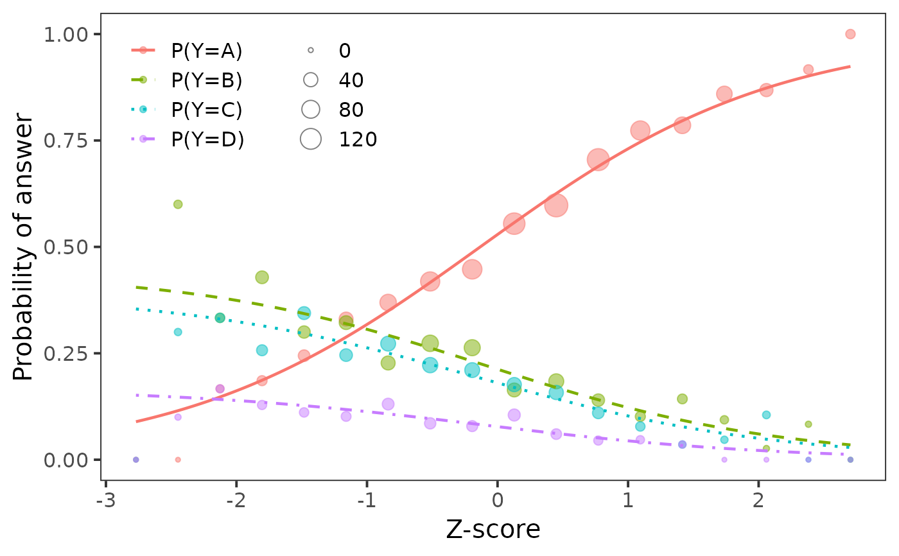

Plots category probabilities functions estimated by
multinom() from the nnet package using the ggplot2
package.
Author
Adela Hladka
Institute of Computer Science of the Czech Academy of Sciences
hladka@cs.cas.cz
Tomas Jurica
Institute of Computer Science of the Czech Academy of Sciences
Patricia Martinkova
Institute of Computer Science of the Czech Academy of Sciences
martinkova@cs.cas.cz
Examples
# loading data
data(GMAT, GMATtest, GMATkey, package = "difNLR")
matching <- scale(rowSums(GMAT[, 1:20])) # Z-score
# multinomial model for item 1
fit <- nnet::multinom(relevel(GMATtest[, 1], ref = paste(GMATkey[1])) ~ matching)
#> # weights: 12 (6 variable)
#> initial value 2772.588722
#> iter 10 value 2202.736516
#> final value 2202.119884
#> converged
# plotting category probabilities
plotMultinomial(fit, matching, matching.name = "Z-score")
